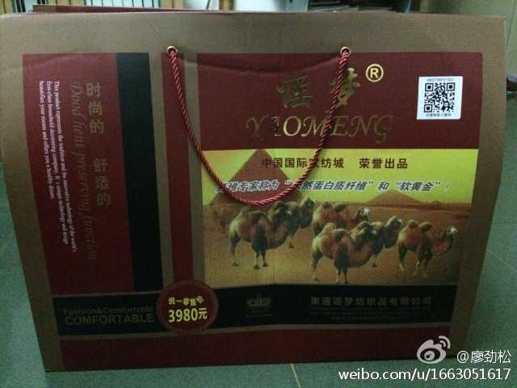

新形式的闭关锁国@郭继军_Lancelot:在国内的时候，访问国内的网站和访问国外可以访问的网站速度，完全是两个不同的体验。到了国外，访问其他所有国家的网站和访问国内的网站，也是两个不同的速度体验。从速度体验上，我朝已经和全球互联网相对隔离成了自我封闭的两张网络。
微博上写毕业于清华，北大，复旦的特别多，不少也就是在这些校园里上过培训班吧，就是外地蟹到阳澄湖洗个澡可以标高些价一样。---:该账号因被投诉违反《微博社区公约》的相关规定，现已无法查看。查看帮助 网页链接
可笑的逻辑。你无端被围墙圈起来了，不去指责建墙的人，倒责怪被圈起来的人不会翻高墙。//@大雨徐来:中国对外部信息的阻拦仅限于政治和色情信息，这些信息对青春期的中国，弊大于利。而且对于真正有能力的人，也根本拦不住，说闭关锁国的人，是对自己能力的不自信。//@Ada李力:新形式的闭关锁国@郭继军_Lancelot:在国内的时候，访问国内的网站和访问国外可以访问的网站速度，完全是两个不同的体验。到了国外，访问其他所有国家的网站和访问国内的网站，也是两个不同的速度体验。从速度体验上，我朝已经和全球互联网相对隔离成了自我封闭的两张网络。
回复@大雨徐来:你把政府当爹妈看，是你的认知，不要推导到别人头上。@郭继军_Lancelot:在国内的时候，访问国内的网站和访问国外可以访问的网站速度，完全是两个不同的体验。到了国外，访问其他所有国家的网站和访问国内的网站，也是两个不同的速度体验。从速度体验上，我朝已经和全球互联网相对隔离成了自我封闭的两张网络。
愤怒会成为做事的一种动力，但要放在值得的地方。@Ada李力:朋友对我发怒的劝解是：“如果狗咬了你一口，你还要去咬狗吗？”。我说不会去咬狗，但我会拿棒子揍它一下，让它知道咬人是要付出代价的，而绝不会留下一句”好人不跟狗斗“的自我劝解的话，就转身离开。
好的运营人员难找。@龚文祥:销售与市场渠道版的最新电商文章《运营部：电商最重要的内核》，这是我见过探讨电商运营部最深入文章之一：1、运营是蜘蛛织网，吸引用户上门，然后粘住他们；2、电商公司只有运营对整体销量及毛利负责，其他部门只对各自KPI负责；3、运营的3大能力：数据分析、整体协调、行业理解。作者：@张陈勇
回复@袁店明Dynesy:该吵还是得吵。如果不发出自己的声音的话，岂不是更让这类网民霸占了话语权。网络中，经常出现劣币驱逐良币的现象，就在于有些人太洁身自好了。[呵呵]@Ada李力:又犯个错误，竟然跟SB讨论起来了。
#社区运营#//@老马自奋蹄://@isavedeagal:社区运营，说到最简单，就一个字：人。有了人，什么都有。再往下说，怎么来人，怎么留住人，怎么用人。@老马自奋蹄:社区运营的用户体验:1、永远不让用户感到寂寞；2、回答网友每一个疑问；3、无论认同与否，必须给予响应；4、让用户找到朋友，或让用户找到仇人；5、建立合理的积分体系，提升荣誉观念；6、不放过每一次事件；7、让网友最方便找到有用信息；8、为20%人提供互动价值，为80%人提供信息价值 转
跟几个医院负责人聊#社区运营#，他们都很关注一个问题：怎么消除那些负面评价。我说通常策略有两个：1，早早培养你的忠粉，负面言论会有粉丝帮你解决；2，把负面言论当做争取用户的契机，解决得好，即可以收获到忠实用户，又可以成为一个营销点。- 删帖是较差的做法，而且往往是传统行业人的第一选择。
删帖被人发现后，会造成更大被动，因为大家想当然地会认为：没做亏心事，你删什么贴？//@网路游侠:所以，舆情监控、删帖的相当大一部分客户是政府机关……思路不改变，永远都会落后一步……曾经走过一些政府单位，遇到帖子之后第一想法就是：这么把它删了？我出钱……当官不为民做主，删帖也于事无补。@Ada李力:跟几个医院负责人聊#社区运营#，他们都很关注一个问题：怎么消除那些负面评价。我说通常策略有两个：1，早早培养你的忠粉，负面言论会有粉丝帮你解决；2，把负面言论当做争取用户的契机，解决得好，即可以收获到忠实用户，又可以成为一个营销点。- 删帖是较差的做法，而且往往是传统行业人的第一选择。
也不全是孩子没时间陪的缘故，这些老人在信息时代落伍了，加上年龄带来的固执和僵化，被骗几乎是必然的结果。解决办法，要么就是别心疼钱，能哄老人开心就成，要么就是别让老人手里有太多闲钱。//@廖劲松:如果没时间陪老人，那么电信诈骗、卖理财产品的、卖保健品的……就会花很多时间陪他们。@慢跑者-廖劲松:#互联网思维# 小区周围开了个老年理疗室，每天让老人免费使用理疗仪器，尽管我天天提醒，免费后面是高昂的付费，呵呵，今天父母还是心花怒放的花2980元买下了价值10500元的虫草口服液，并赠送一套价值3980元的驼绒被......天天网上互联网思维的大侠们，比起做传统生意的，可差远了 
回复@阿朱:目前对他们而言，唯一有效带来客流的方法是广告，而广告的思维就是只能说好，不能说坏。抱着这种思路的话也难做社区运营。//@阿朱:他们不关心社区运营啊，他们只关心舆情啊，社区运营只是可能能解决舆情的一种手段啊，而且未必是有效手段（对于医院负责人而言）@Ada李力:跟几个医院负责人聊#社区运营#，他们都很关注一个问题：怎么消除那些负面评价。我说通常策略有两个：1，早早培养你的忠粉，负面言论会有粉丝帮你解决；2，把负面言论当做争取用户的契机，解决得好，即可以收获到忠实用户，又可以成为一个营销点。- 删帖是较差的做法，而且往往是传统行业人的第一选择。
//@协和王含:有这位教授，但我觉得事情一定不是真的！第一，是神经科不是“精神科”，第二，她已经退休，不会去沈阳招募病人，第三，以我对她人品的了解，她绝不可能去推销什么不靠谱的*%&》#¥^因子！现在的骗子够狠，掺假不算骗，掺真才难辨！提醒大家切莫上当！---:抱歉，此微博已被作者删除。查看帮助： 网页链接
悲哀//@黄佟佟:骂女人骂得最狠的通常是女人，真是…… //@李佳佳Audrey:想起一位闺蜜的论断：“女人对女人的惊人恶毒只有一个缘由：她有我无，着实嫉妒”。---:该账号因被投诉违反《微博社区公约》的相关规定，现已无法查看。查看帮助 网页链接
//@innovate511:做算法提升，总会有效果的，只不过价值到底多大，领导认了就行，没必要深究。另外大数据要颠覆性地提升用户的体验，目前条件不成熟，因为这必须得产品决策层来定。做数据挖掘的人，只能做“修修补补”的事，这也是最大的悲哀。所以我索性出来自己干了，想怎么颠覆就怎么颠覆@Ada李力:当当网算法研究员 鞠奇 是去年四月份毕业的博士生。加盟当当后不久，就通过提高书评的显示质量，而使书籍销售提高了一个亿，从而获得了总裁奖。技术是生产力的绝佳例子。他分享的话题是《营销技术经验点滴谈》@CTO俱乐部